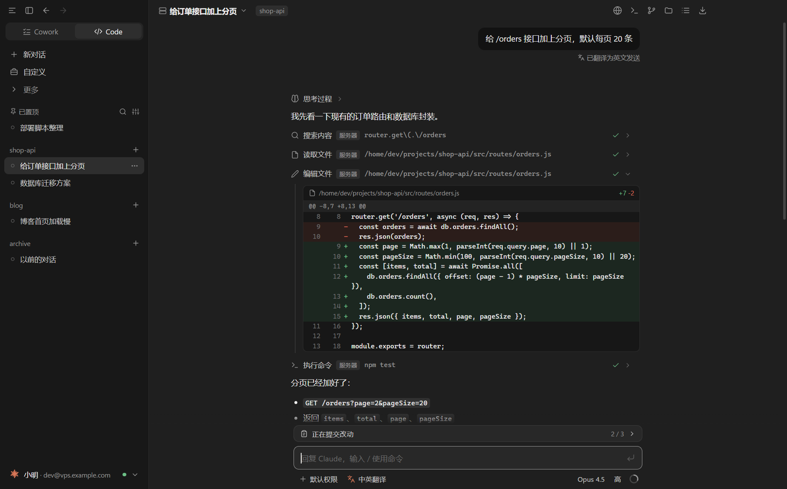
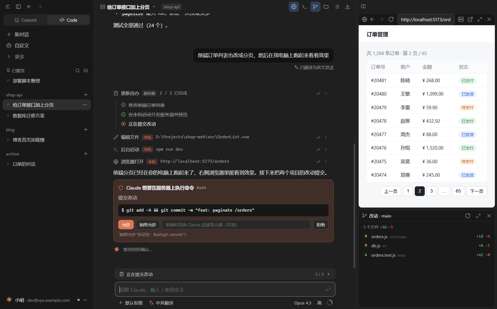
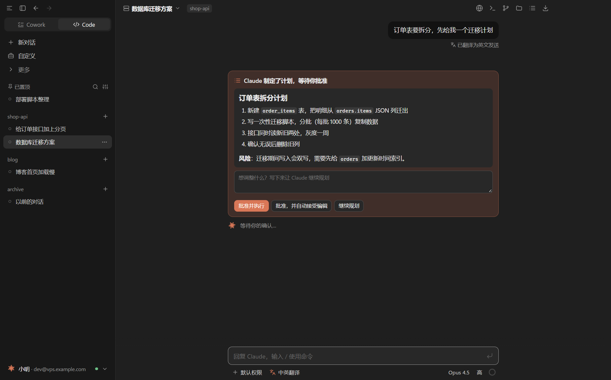
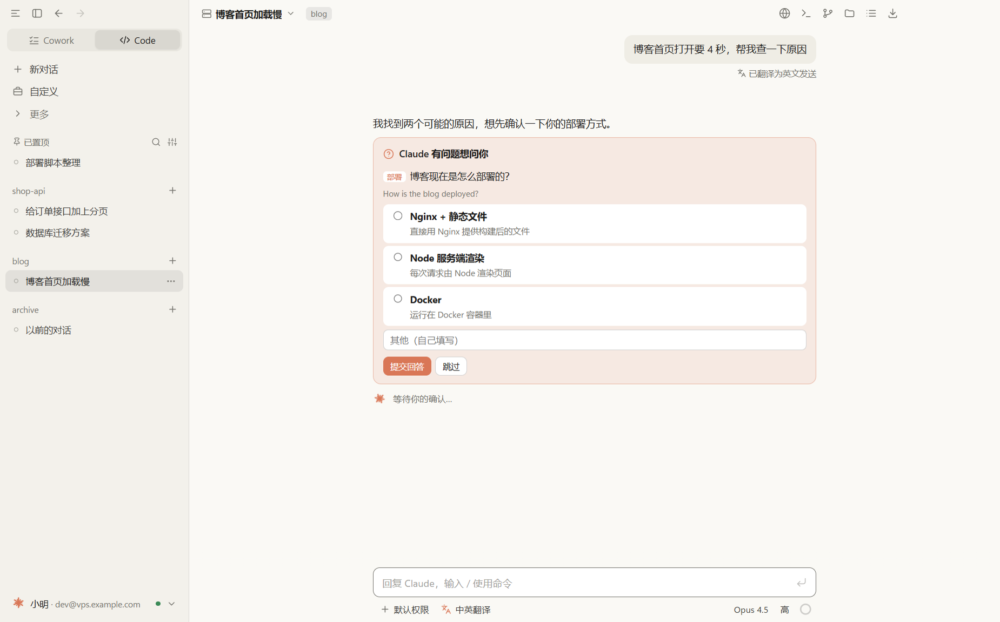

你在本机对话，Claude 在服务器上干活，也能回过头来操作你的电脑
输入自动译成英文发送，英文回复译成中文显示，原文随时能看
Pagination is in place: GET /orders?page=2&pageSize=20 now returns items, total, page and pageSize. All 24 tests pass.
分页已经加好了：GET /orders?page=2&pageSize=20 会返回 items、total、page 和 pageSize，24 个测试全部通过。
搜索、读文件、改代码、跑测试，过程和 diff 都摆在眼前

Claude 在本机后台启动 npm run dev，
再用内置浏览器打开、点击、截图、看控制台

权限请求、Claude 的提问、计划审批，都在对话里一键处理

